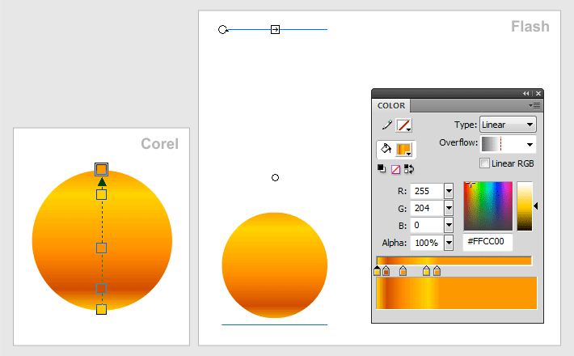

From CorelDRAW To Flash?
DAZ / 28.03.2010, 01:03/00:41
Форум:
Подскажите, как безболезненно перекинуть работу из Корела во Флеш. Важно, что бы все плашки и градиенты оставались на своём месте.
Пробовал по-разному - ничего пока не устривает!..
Может есть какой макрос?...
DAZ, посмотри этот урок, может что-то для себя полезное найдешь!
http://cdrpro.ru/news/2009-08-19-159
Я видел эту статью... но мне надо, что б градиентная растяжка располагалась именно так как в Корел. В SWF градиенты экспортируется особым способом. (см. картинку)
В принципе похоже и всё бы ничего, но она немного отличается. Мне это важно, т. к. я делаю микроиконку (12х12 px), а тут каждые полпикселя на вес золота! )

DAZ, что то я не вижу разницы :)
В родном файле градиент растянут по по всей плашке, при экспоте в SWF растяжка становиться в 3 раза больше... на скриншоте ж показал...
Я хочу что б один в один экспотрировались градиентные маркеры, как я поставил лично. Почему в SVG, например, всё точно экспортирует, а здесь как то не очень?..
Добавлено (28.03.2010, 03:54)
---------------------------------------------
и кстате разница расположения есть, небольшая но есть
DAZ, не знаю что тебя не устраивает. Визуально то заливка 1:1. Каждый день с флешем работаю и никогда такой замарочки не возникало.
Да даже плевать, что линия градиента ведет в SWF как-то криво выходит за объект куда-то за горизонт... но маленькое различае есть. Я просто хочу быть уверен, что экспортируя файл в SWF-ку все мои труды по расстановке маркеров не прошли даром. На больших файлах может и нет различий, но когда делаешь такой мизер как я в несколько пикселей, то всё играет значение... ну вобщем, я так понял, ни чем не сможете помочь, т. к. не сталкивались с подобным...
DAZ, 100% поддержки сторонних форматов разработчики не обещают. Так что если нужна микро точность, делай сразу всё во флеше или перепробуй все форматы которые может импортировать флеш (я бы с этого и начал!).
Рисовать во Флеше я не могу (у меня особые отношения с этой программой :D ) ...а вот перепробовать разные способы - как раз занят решением этой проблемы...
DAZ, у многих особое отношение к этой программе. Я вот например долго боролся с тем что когда переносишь градиент с корела во флеш (а флешка должна быть 6 версии! Да да, есть ещё дуролеи которые требуют в 6 версии, когда на дворе уже скоро 11 будет), при генерации swf файла Флеш говорит что файл содержит неподходящий тип заливки для 6 версии.
Сейчас вроде редко такое, пока не заметил закономерности. Да и особо нет времени на эксперименты.